Fotografías originales de Wikimedia Commons. Las miniaturas se recortaron y convirtieron a WebP para su presentación en Ciudad Laboral.
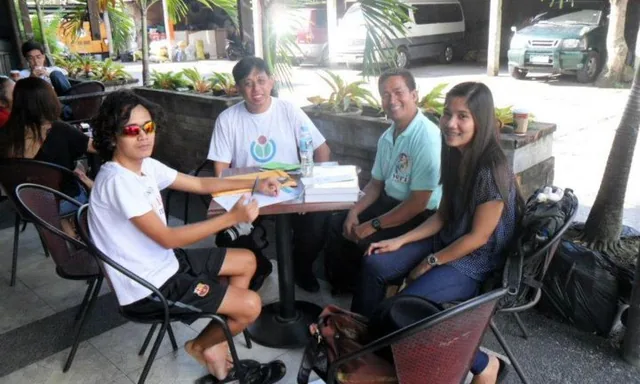
Filipinayzd
File:Business meeting with WMPH President, and Bikol Community in Naga City.jpg
CC BY-SA 3.0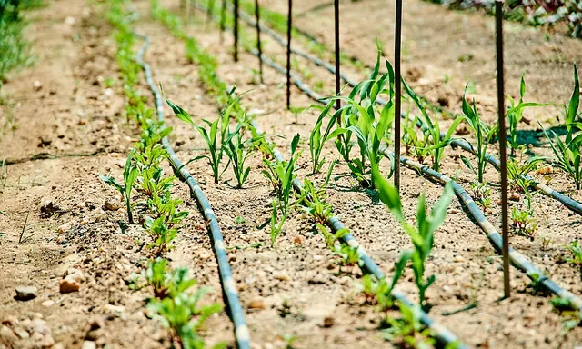
Tim Brunauer on behalf of Deutsche Gesellschaft für Internationale Zusammenarbeit (GIZ)
File:Greenhouse agriculture in Namibia.jpg
CC BY-SA 4.0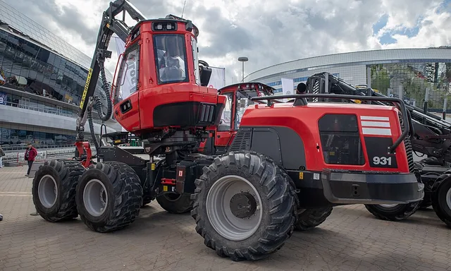
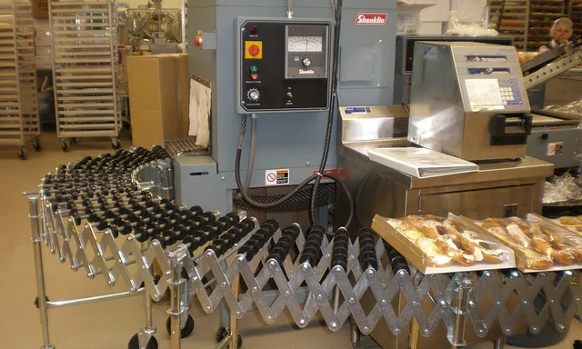
BrokenSphere
File:SSF Costco bakery pastry packaging line.JPG
CC BY-SA 3.0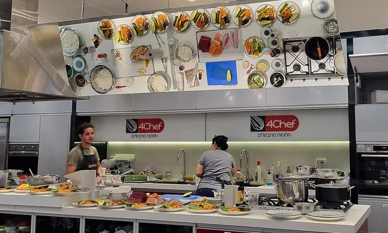
בר
File:Preparing Sushi with Chef Eviatar Churi in 4Chef Culinary School kitchen, Israel.jpg
CC BY-SA 3.0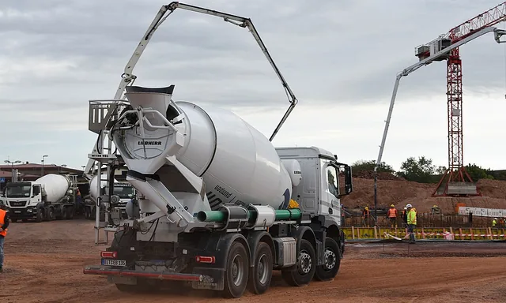
U.S. Air Force photo by Airman Sydney Franklin
File:Concrete pouring for the new Spangdahlem Elementary School (8062804).jpg
Public domain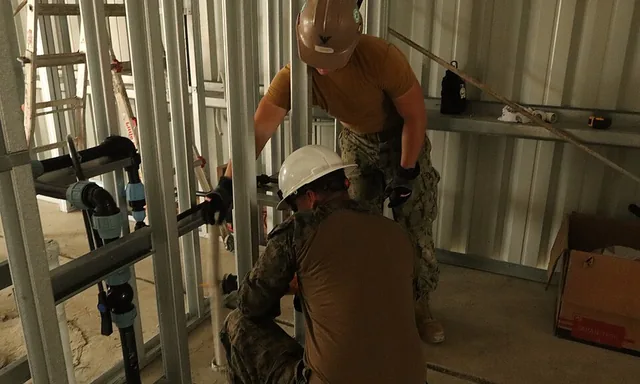
U.S. Navy photo by Petty Officer 3rd Class Matthew Noles
File:Plumbing Installation (8909644).jpg
Public domain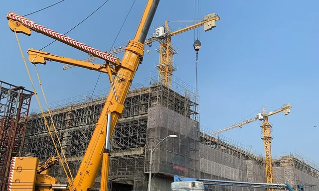
Tbatb
File:A Liebherr LTM 1500-8.1 crane truck lifting a Genie S-85 Lift Crane.jpg
CC BY-SA 4.0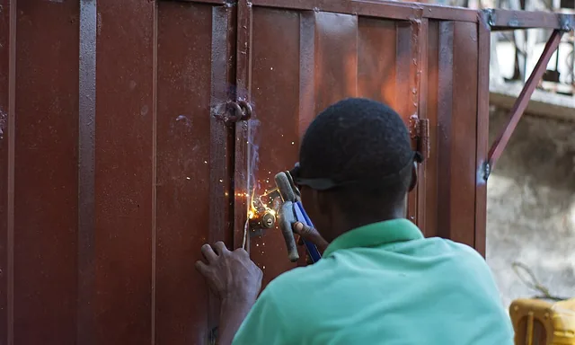
Kwameghana(Bright Kwame Ayisi)
File:Uplclose with a welder at work.jpg
CC BY-SA 4.0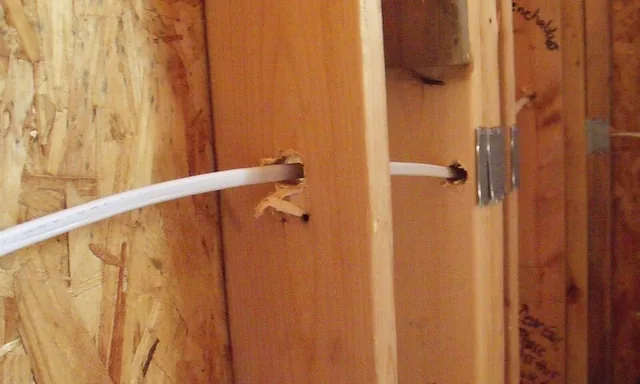
Original photo: Amy Bonilla on Flickr Modified by Gazebo on July 21, 2015, with lossless optimization, the addition of comment and XMP-cc:License metadata, and the removal of JPEG IFD1 (thumbnail) metadata.
File:Electrical-wiring-rough-in.jpg
CC BY-SA 2.0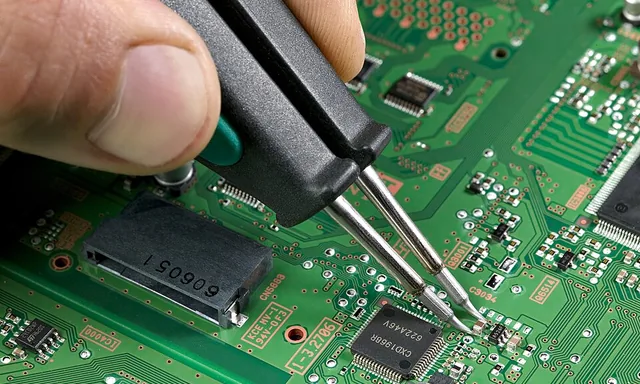
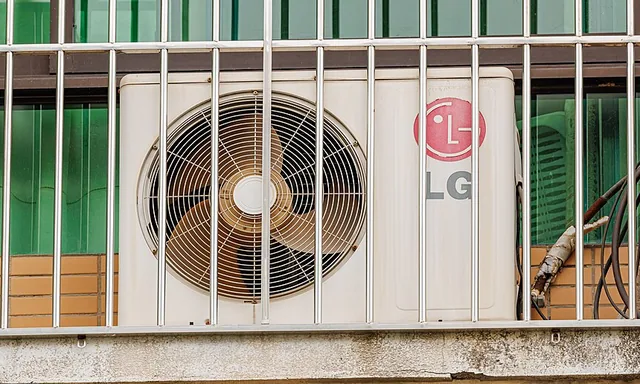
Dinkun Chen
File:LG AIR CONDITIONER OUTDOOR UNIT (2).jpg
CC BY-SA 4.0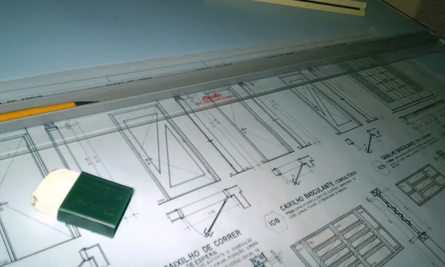
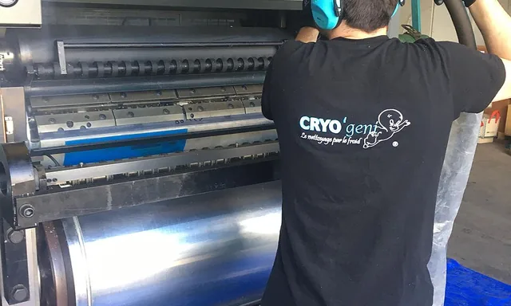
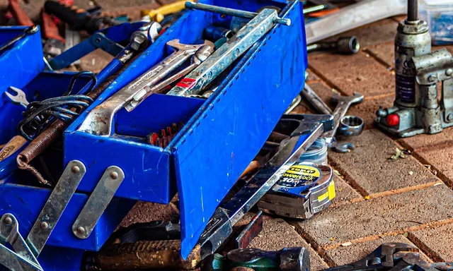
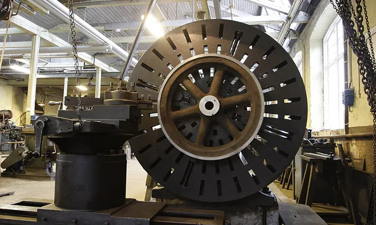
Work With Sounds
File:Metal lathe used to produce flywheels.JPG
CC BY-SA 4.0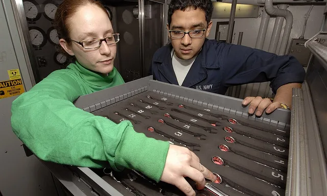
U.S. Navy photo by Mass Communication Specialist Seaman Damian Martinez
Public domain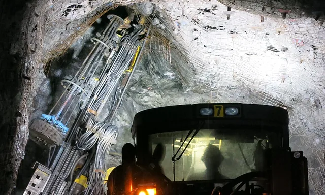
University of Exeter from United Kingdom
File:Teck’s Pogo underground gold mine in central Alaska, USA by Dylan McFarlane (27689600202).jpg
CC BY 2.0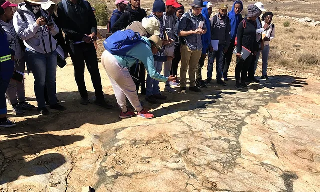
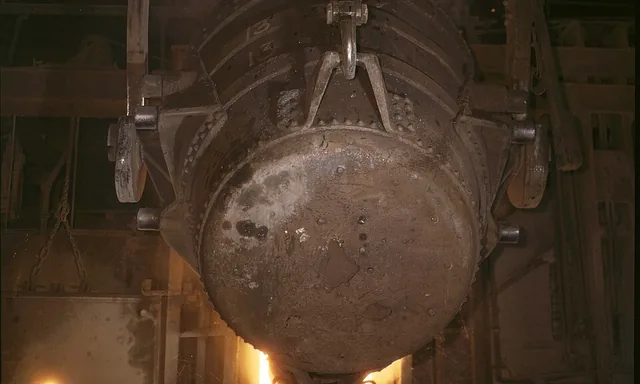
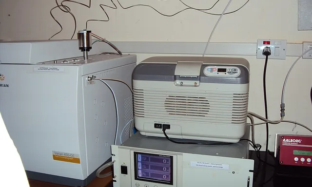
Linda Bartlett (Photographer)
File:Nurse checks blood pressure.jpg
Public domain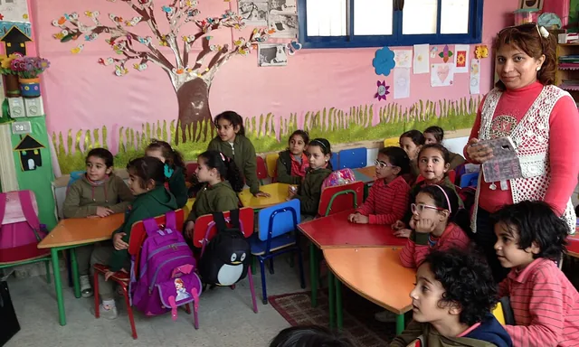
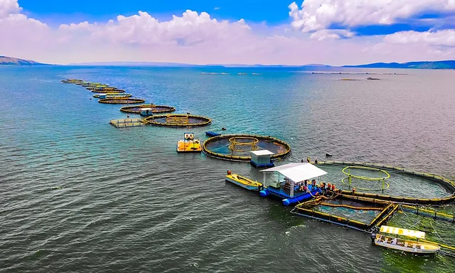
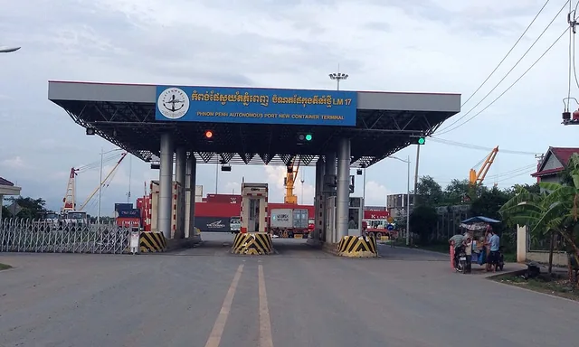
Kiensvay
File:Phnom Penh Autonomous Port New Container Terminal.jpg
CC BY-SA 3.0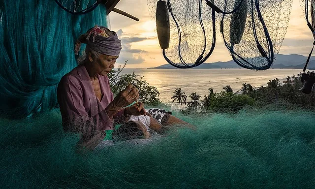
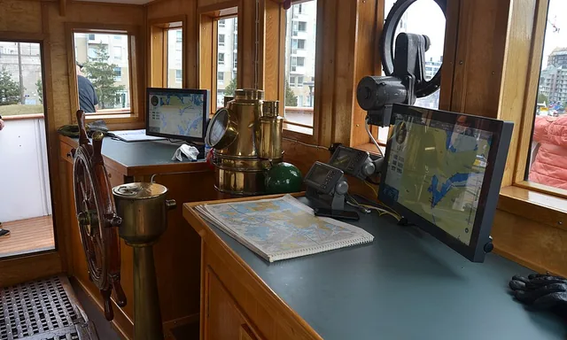
Daniel Case
File:Norwegian tour group being led by guide at Temple of Heaven.jpg
CC BY-SA 3.0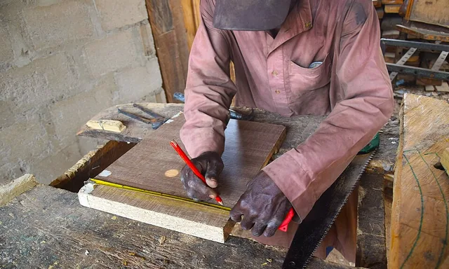
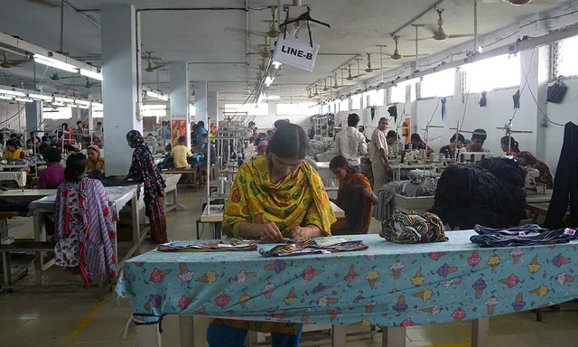
Tareq Salahuddin from Dhaka, Bangladesh
File:Garment factory in Bangladesh Women working.jpg
CC BY 2.0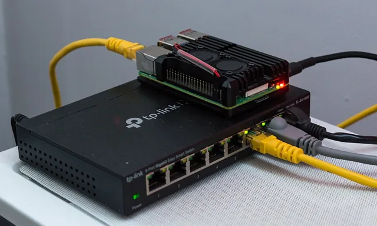
RAIL P (RAIL.PHOTOGRAPHY)
File:Raspberry Pi 4 on a network switch.jpg
CC0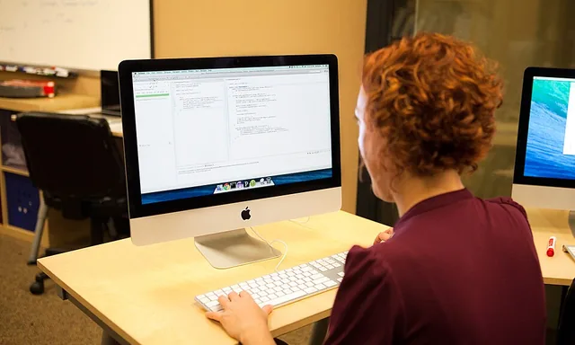
Joonspoon
File:Programmer writing code with Unit Tests.jpg
CC BY-SA 4.0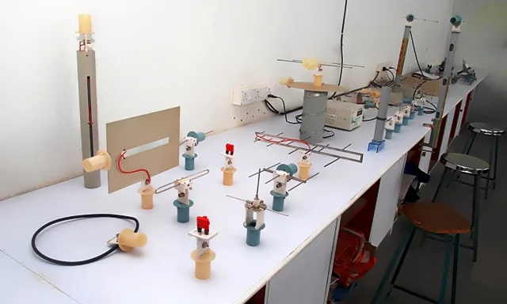
Intelligentguy89
File:RCoE - telecommunications - Antenna lab.jpg
CC BY-SA 3.0


_1.jpg){kind=link}


.jpg){kind=link}
.jpg){kind=link}


.jpg){kind=link}


_Aircraft_Intermediate_Maintenance_Department_(AIMD),_gathers_tools_to_perform_maintenance_on_a_set_of_E.jpg){kind=link}
.jpg){kind=link}